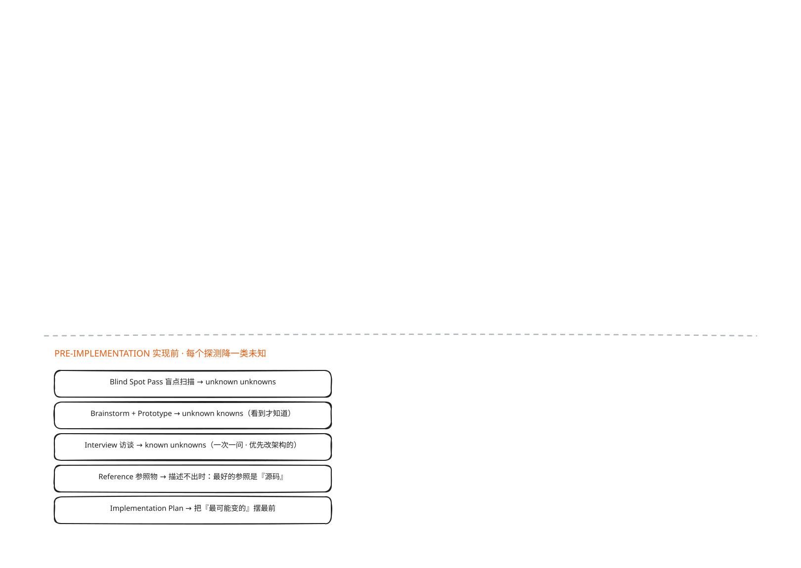
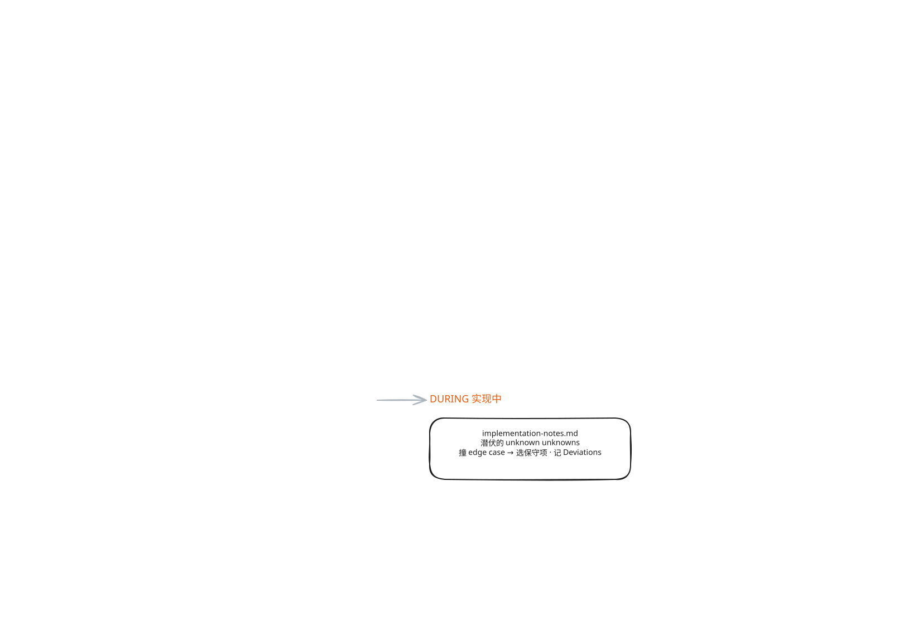

精读AI_
那怎么练？
在讲招式之前，作者先给你看一个陷阱。
你看图上这里，左右两个红框——左边写着「太具体」，右边写着「太模糊」，两支红箭头都往下汇到底下那个绿框，上面小标题写着「指令的平衡」。
太具体，你把话说死，Claude 就严格照你的指令走，哪怕它发现换个方向更合适也不给你转，因为你没留转的空间。
太模糊，你说得笼统，Claude 就自己拿主意，基于所谓「行业最佳实践」做一堆假设，而那些未必适合你这个任务。
作者点破本质：当你不为未知做准备，你会两头都输——既不知道哪段路布满障碍、要提前扫雷，也不知道哪段路本是坦途、但你其实还想让 Claude 拐个弯。
这是一个对称的陷阱：两个方向都输，输的方式还正好相反。
好在，Claude 恰恰能帮你更快发现未知：它搜 codebase、搜互联网快得离谱，从失败里迭代也比你快。
但整段最重要的一步，就是图上那两支箭头最后汇到的那个绿框——给 Claude 关于你「起点」的 context。
就是告诉它，你现在站在思考流程的哪个位置、你对这个问题和这个 codebase 到底有多少经验、你哪懂哪不懂，然后让它像一个 thought partner、思想伙伴那样跟你一起想。
它不是你的工具，是你的搭子。
作者还反复强调，几乎所有这些场景里，一个 HTML 页面都是最好的载体——把想法可视化、摆出来给你反应。
接下来这套工具箱，就沿着「前、中、后」这条时间轴排开，而且不是每次全用，是一个按需取用的技巧集合。